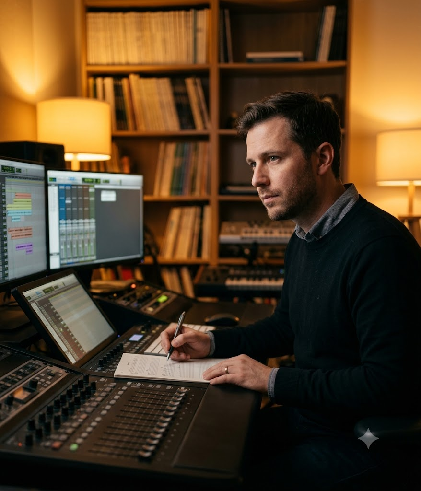

The story behind
the sound
London and Berlin-based film score composer and sound designer crafting immersive sonic worlds for cinema, games, and trailers.

Marcus Hale
"I grew up watching films twice — once for the story, once for what the music was doing to me."
I'm a film score composer and sound designer based between London and Berlin. After studying at the Royal College of Music, I spent three years as an orchestrator at Paramount Europe.
In 2020, I scored my first solo film credit — a documentary called The Weight of Stars. It won Best Sound at the Edinburgh Documentary Film Festival. More importantly, it made me certain this was the work I was built for.
Since then, I've worked on feature films, AAA game titles, and high-profile trailer campaigns.
How I got here
Composition degree with a focus on contemporary film and media scoring. Thesis project: a 40-minute score for a student feature screened at BFI Southbank.
Three years orchestrating for senior composers on theatrical releases. Learned how scoring decisions are made under pressure, with picture locked and release dates firm.
Won Best Sound at the Edinburgh Documentary Film Festival. The project that made me commit fully to independent composing.
Working across film, games, and trailers with directors and studios I admire. Limited to 4–6 major projects per year.
Education & Recognition
Education
Recognition
Convinced? Let's talk.
Fill in a short project brief and I'll respond within 48 hours with my availability and initial thoughts.